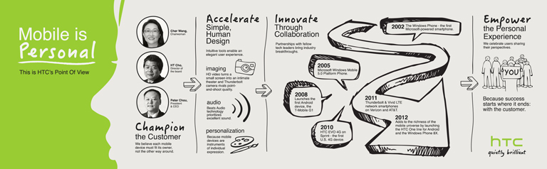

Founded in 1997, HTC built its reputation as the behind-the-scenes designer and manufacturer of many of the most popular OEM-branded mobile devices on the market.
Since 2006, we have regularly introduced many critically-acclaimed mobile devices under our own brand, and our portfolio includes smartphones and tablets powered by the Android and Windows Phone operating systems.
We are dedicated to creating a customized user experience and believe that each mobile device needs to fit its owner, and not the other way around. What we make is not merely the product of focus group tests, but of observing and honoring how individuals choose to interact with technology.
Our customers guide everything we do at HTC, and it’s this commitment that defines the company.